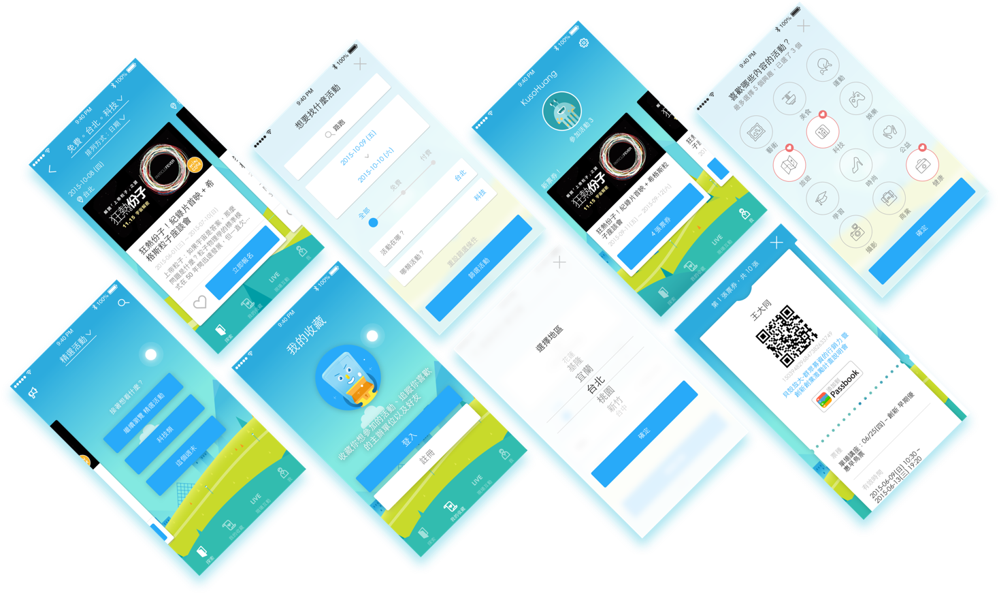
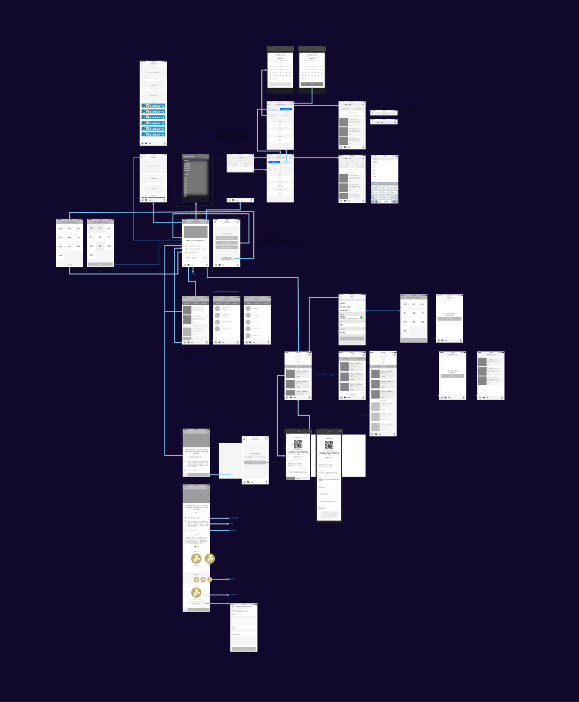
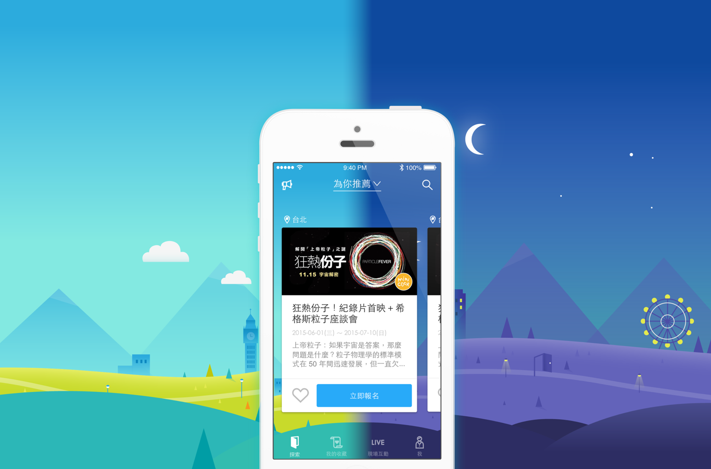

Accupass 的 APP 希望能將品牌的風格展現到產品的各個面向上，而不僅是健全簡潔的UI。我們目標是讓功能更完整，並創造品牌風格更完整一致的體驗。

Wireframe
在規劃初期，我們只有粗糙的想法，Wireframe 有助於了解不同元素之間的關係，並且快速用 Wireframe 做成粗糙的 Prototype，成員同時參與也會更了解目前的狀況，幫助我們完成設計決策。

APP flow
首頁Flow Prototype
搜尋Flow Prototype
重塑視覺
Accupass的品牌精神是年輕、熱情、充滿好奇的精神，我們希望體現在APP當中。多次的反覆討論以及修改之後，我們決定出了主視覺的呈現方式以及風格，並應用到整個APP的每一個畫面上。

首頁Flow 完整視覺 Prototype
搜尋Flow 完整視覺 Prototype
Framer 主視覺 Prototype
使用 Framer APP 開啟